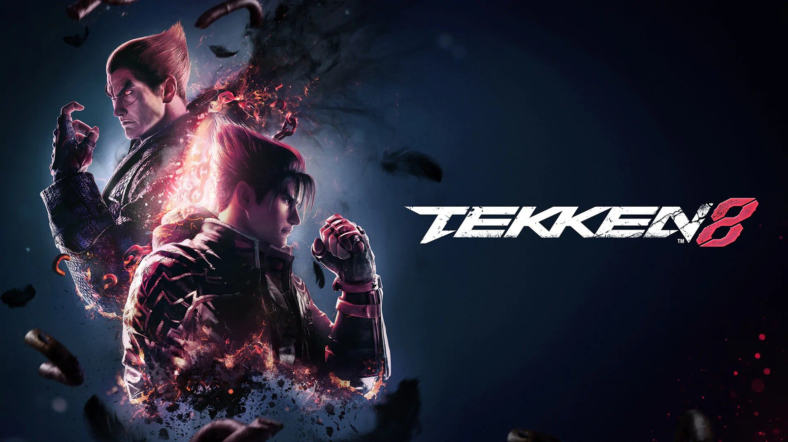

My Home Page
Welcome to my site. My name is Justin Shin and I am a sophomore studying information technology and management at Illinois Institute of Technology. This site was built by hand for ITMD 361 using nothing but raw HTML, so what you are looking at is the plain structure of the document with no styling applied at all. The subject of this page is one of my favorite games: Tekken 8.

How Long I Have Been Playing
I started near the end of Tekken 7's run, so somewhere around three or four years ago. I cannot point to a specific day. I picked it up, got beaten badly for a long stretch, and at some point stopped being a person who was trying the game and became a person who plays it. By the time Tekken 8 came out I had already put in enough time that the transition felt less like learning a new game and more like relearning habits I thought were permanent.
Fighting games are unusual that way. Most games get easier the longer you play them. This one keeps handing you new ways to be wrong.
Who I Play
I play the Mishima characters, mainly Heihachi and Kazuya. If you do not follow the series, that choice says something specific about how I like to spend my time, because the Mishima style is built around inputs that are difficult on purpose. The signature move requires hitting several buttons on an exact frame, and if you are off by a fraction of a second you get a weaker version or nothing at all.
There are characters in this game that do more damage with far less effort. I know that. Picking Mishimas means accepting that a large part of practice is spent on execution rather than strategy, and that a bad day at the controller will show up immediately in whether your inputs land. The payoff is that when the movement does come together, nothing else in the game feels like it.
Where I Am Now
My current rank is God of Destruction I, which is in the upper tier of the ranked ladder. I am saying that as a fact rather than a flex, because anyone who plays knows what it actually means: it is high enough that most matches are decided by small things, and it is not high enough to stop losing. The gap between me and the top of the ladder is still wide.
What changes at this level is the kind of mistake that costs you. Early on you lose because you do not know what a move does. Later you lose because you knew exactly what was coming and pressed the wrong button anyway.
Video
Below is a clip I edited about two years ago. It is Dragunov, not one of my mains, and I was essentially copying what I had watched other players do without understanding most of it. There is no commentary, just cuts.
I am including it because the gap is the interesting part. My play in this clip is noticeably worse than how I play now, and I could not have told you that at the time. Improvement in fighting games is invisible while it is happening. You only see it by looking back at footage like this and noticing all the openings you walked past.
Why I Keep Playing
Honestly, it is addictive more than anything else. I would describe it as a love-hate relationship. There are genuinely infuriating moments in this game. You lose to something cheap, you lose three in a row and watch your rank slide, you drop a combo you have hit a thousand times in practice because it finally mattered. In the moment it is hard to describe the appeal to someone watching over your shoulder.
And then the next match starts and I am still there. The thing that keeps pulling me back is that the losses are legible. There is no team to blame and no random element to point at. Something happened, I did not respond to it correctly, and I can find out exactly what it was. Knowing that a loss was mine is frustrating, but it also means the fix is mine too.
So I keep queuing. I do not think I am going to stop.
Elsewhere On This Site
My video profile page covers a different interest, the band Mili, with three songs I would recommend to anyone. My resume has my coursework, skills, and the projects I have worked on.